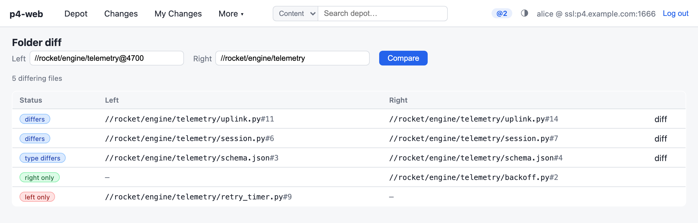
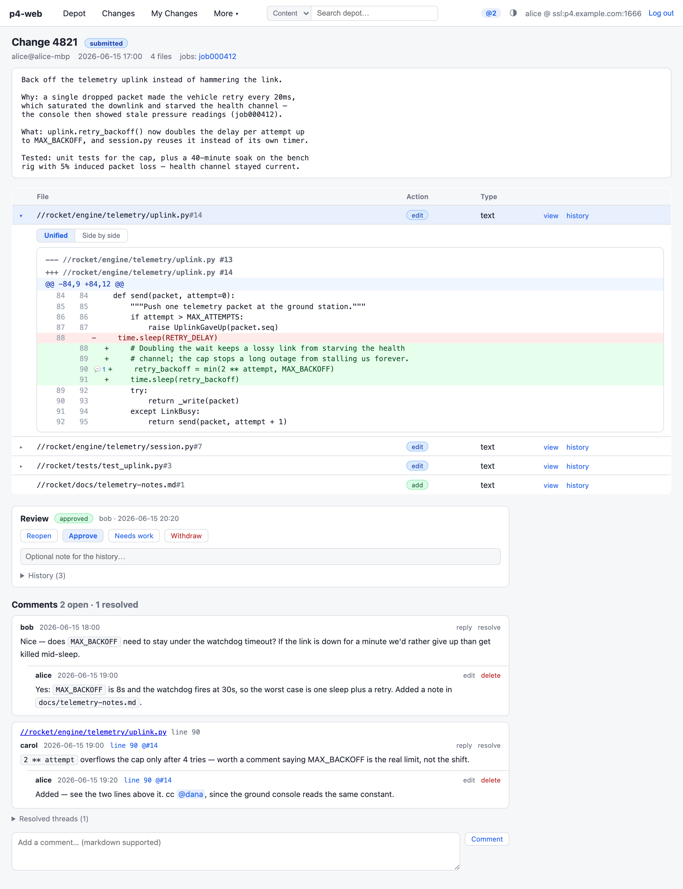
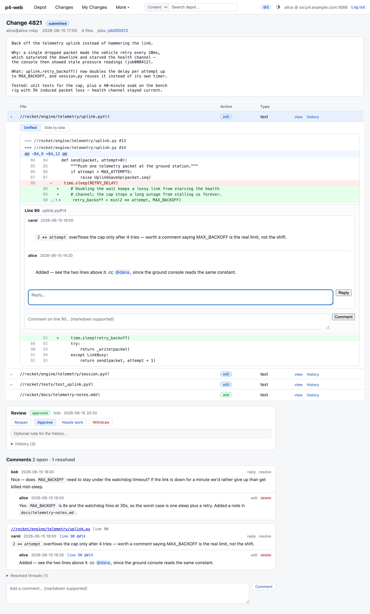
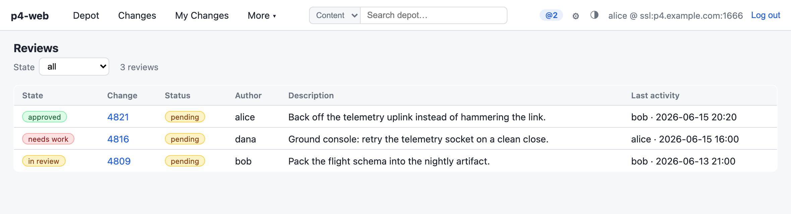
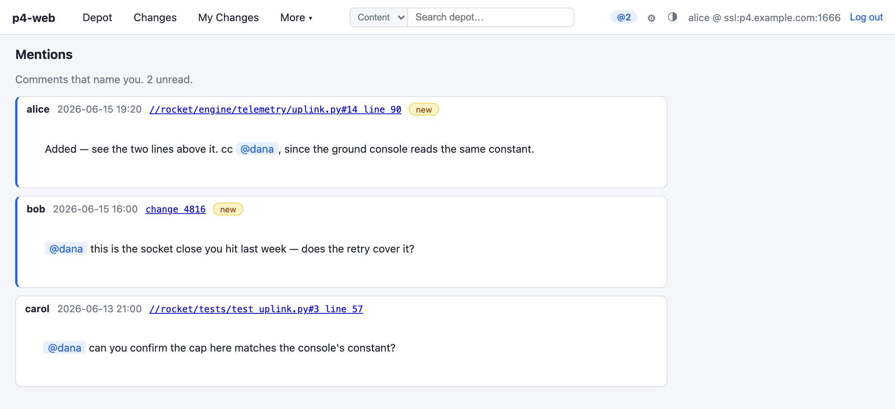
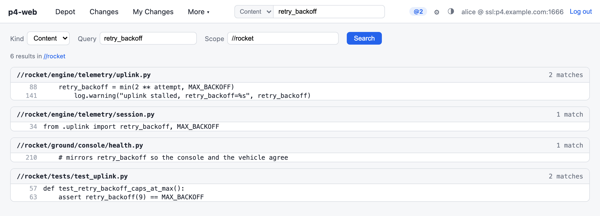
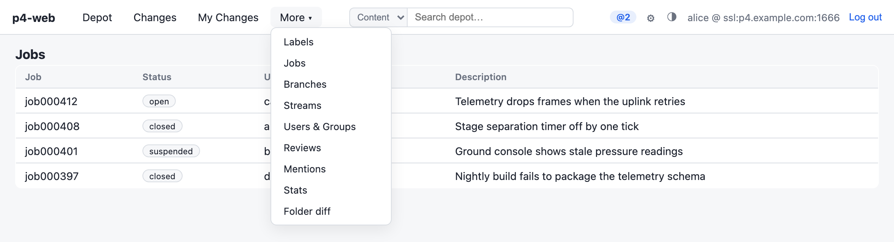
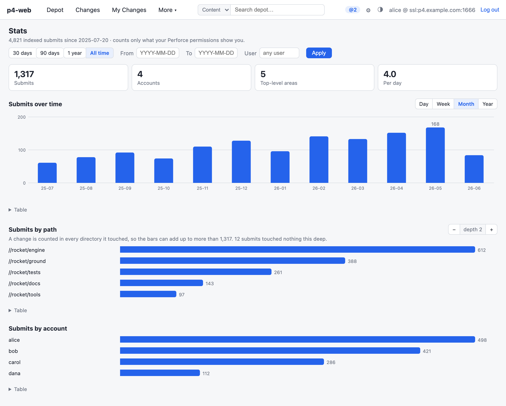
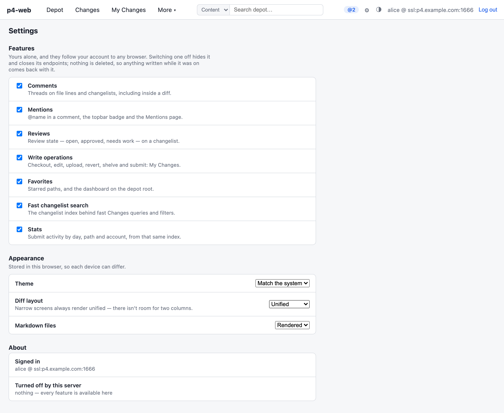

Perforce 계정으로 로그인
자격 증명은 p4 login 티켓으로 교환되고 —
비밀번호 자체는 저장되지 않습니다. 장기 티켓을 쓰는 사이트라면 비밀번호
자리에 티켓 값을 붙여넣을 수 있습니다(Swarm 방식). 로고 아래 표시되는
서버 주소가 이 인스턴스의 P4PORT입니다.

로그인부터 서브밋까지, 그리고 그 너머의 검색과 메타데이터 브라우저까지 — p4-web 한 바퀴 둘러보기. 아직 설치 전이라면 퀵스타트로 1분 안에 서버를 띄울 수 있습니다.
모든 스크린샷은 가상의 데모 디포(//rocket)와
가상 사용자·체인지리스트로 만든 것입니다 — 실제 인스턴스에서는 당신의
서버 데이터가 Perforce 프로텍션에 따라 필터링되어 보입니다.
자격 증명은 p4 login 티켓으로 교환되고 —
비밀번호 자체는 저장되지 않습니다. 장기 티켓을 쓰는 사이트라면 비밀번호
자리에 티켓 값을 붙여넣을 수 있습니다(Swarm 방식). 로고 아래 표시되는
서버 주소가 이 인스턴스의 P4PORT입니다.
왼쪽의 접이식 트리는 딥링크와 동기화됩니다(P4V 스타일). 목록에는 리비전·체인지리스트·타입·수정 시각이 보이고, 열 머리글을 클릭하면 정렬됩니다. ☆ 버튼은 현재 경로를 즐겨찾기로 저장하며, 즐겨찾기는 루트 페이지에서 대시보드가 됩니다. README가 있는 디렉터리는 목록 아래에 README를 렌더링합니다.

신택스 하이라이팅은 오프라인에서도 동작합니다(highlight.js 번들 포함). 리비전 드롭다운으로 어느 리비전에서든 파일을 다시 렌더링하고, Raw와 Download는 정확한 바이트를 제공합니다. 줄 번호를 클릭하면 퍼머링크를 복사하거나 인라인 코멘트 스레드를 시작할 수 있습니다. 마크다운 파일에는 Rendered/Source 토글이 붙습니다.

Annotate 탭은 각 줄을 마지막으로 수정한 체인지리스트와 작성자를 보여줍니다 — 클릭하면 해당 체인지 전체로 이동합니다. 헤더의 슬라이더는 타임랩스입니다: 드래그하면 과거 어느 리비전 시점의 파일로든 되감아 다시 블레임합니다.

디프가 나오는 모든 곳에서 unified와 side-by-side를 지원하며, 토글은 선호를 기억합니다. History 탭에서 임의의 리비전 쌍을 고를 수 있습니다. 디렉터리 트리 전체를 비교하는 방법은 다음 단계에서 다룹니다.

폴더 diff(More 메뉴 또는 디렉토리 화면의 버튼)는 디팟 경로 두 개를 받아 무엇이 다른지 알려줍니다. 양쪽 모두에서 바뀐 파일, 한쪽에만 있는 파일, 타입이 달라진 파일이 각각 표시됩니다. 어느 쪽이든 @체인지나 @날짜 서픽스를 붙일 수 있어서, 같은 경로를 자기 과거와 비교하면 “이 디렉토리가 릴리스 이후 무엇을 했나”를 그대로 볼 수 있습니다. 다른 파일 행은 바로 파일 diff로 이어집니다.

서브밋/펜딩 체인지리스트를 사용자·경로·설명 텍스트· 날짜 범위로, 서브밋된 것은 파일명으로도 필터링합니다. 설명·파일명 검색은 사용자별 로컬 인덱스(⚡ 바)를 사용하는데, 프로텍션을 준수하며 증분 갱신되어 수천 개 체인지에 대한 검색도 즉시 돌아옵니다. 페이지 자체는 곧바로 뜹니다 — 필터는 인덱스를 기다리지 않습니다.

체인지 번호를 열면 전체 설명, 연결된 잡, 건드린 파일이 모두 나옵니다. 편집된 파일마다 삼각형 토글이 있어 페이지를 떠나지 않고 디프를 unified 또는 side-by-side로 펼칠 수 있고, 펜딩 체인지리스트는 셸브된 파일을 베이스 리비전과 비교해 보여줍니다. 아래쪽에는 체인지리스트 자체에 달린 코멘트 스레드가 있습니다 — 마크다운 본문, 1단계 답글, 정리되면 resolve.

모든 diff의 모든 줄이 앵커를 갖습니다. 줄에 마우스를 올리고
거터의 말풍선을 누르면 그 줄 아래에 스레드가 열립니다 — 마크다운 본문,
한 단계 답글, 정리되면 resolve. 이미 스레드가 있는 줄에는 개수가 표시돼
대화가 어디에 있는지 한눈에 보입니다. 체인지리스트 diff에서 연 스레드는
그 파일 페이지에서 보이는 스레드와 같은 것이고,
@이름을 입력하면 동료 목록이 뜨며 그 사람의 멘션 목록에
코멘트가 들어갑니다.

체인지리스트를 셸브한 뒤 그 페이지에서 리뷰 중·
승인·보완 필요 상태를 답니다. 이 상태는 앱의 것이지
Perforce의 것이 아니어서 체인지리스트 자체는 아무것도 바뀌지 않습니다.
모든 전이는 누가 했는지와 선택적 메모까지 기록되므로 “승인”은 항상 누가
승인했는지를 말해 줍니다. 볼 수 있는 사람은 누구나 상태를 바꿀 수 있습니다.
More 메뉴의 Reviews가 대기열이고, 상단바의
@ 배지는 내 것입니다 — 나를 언급한 코멘트가 최신순으로 모이고,
열어 보면 지워집니다.


My Changes는 개인 펜딩 체인지리스트 페이지로, 필요할 때 만들어지는 서버 측 워크스페이스가 뒤를 받칩니다. 어느 파일 페이지에서든 Edit나 Delete로 파일을 체인지리스트에 열 수 있고, 이곳에서는:
자신의 p4-web 체인지리스트만 조작할 수 있고, 모든 쓰기는 감사 로그에 기록됩니다.

상단 바의 검색 상자는 두 가지로 동작합니다. Files는 모든 디포에서 경로 부분 문자열을 찾습니다(와일드카드 *, ... 사용 가능). Content는 파일 내용을 grep하는데, 서버 전체를 grep하면 서버가 녹아나므로 범위 경로가 필요합니다. 내용 검색 결과는 파일별로 묶여 돌아오고, 각 줄은 뷰어의 해당 줄로 바로 연결됩니다.

태그된 파일까지 보이는 레이블, 닫은 픽스가 함께 나오는 잡, 브랜치 매핑, 부모가 표시되는 스트림, 사용자 & 그룹 — P4V의 메타데이터 브라우저들이 메뉴 하나 아래에 있습니다. 폴더 diff(6단계)도 여기 있습니다.

통계는 체인지리스트 목록으로는 답할 수 없는 것을 보여 줍니다. 요즘 이 디포가 얼마나 바쁜지, 어느 영역이 움직이는지, 누가 올리고 있는지입니다. 시간 축은 일·주·월·연으로 바꿀 수 있고, 경로 차트는 깊이를 한 단계씩 내리거나 막대를 눌러 그 디렉토리로 들어갈 수 있으며, 계정을 누르면 그 사람 것만 남습니다. 세 차트가 같은 필터를 공유하므로 하나를 좁히면 나머지도 같이 좁아지고, 막대를 누르면 바로 그 구간이 걸린 변경 목록으로 넘어갑니다. 수치는 체인지리스트 검색을 빠르게 해 주는 그 로컬 인덱스에서 나오는데, 본인의 퍼포스 티켓으로 만들어지기 때문에 볼 수 있는 것만 세어집니다.

상단바의 톱니를 누르면 설정이 열립니다. 리뷰·코멘트·멘션· 쓰기 작업·즐겨찾기·통계·빠른 체인지 인덱스를 각각 끌 수 있고, 이 스위치는 계정에 저장되어 어느 브라우저에서든 따라옵니다(테마와 diff 레이아웃은 기기별로 남습니다). 서버를 운영하는 쪽이 특정 기능을 전체에 대해 꺼 둘 수도 있는데, 그런 항목은 여기에 그 사실이 표시된 채 잠깁니다. 어느 쪽이든 데이터는 지우지 않습니다 — 다시 켜면 켜져 있던 동안 쌓인 것이 그대로 있습니다.
